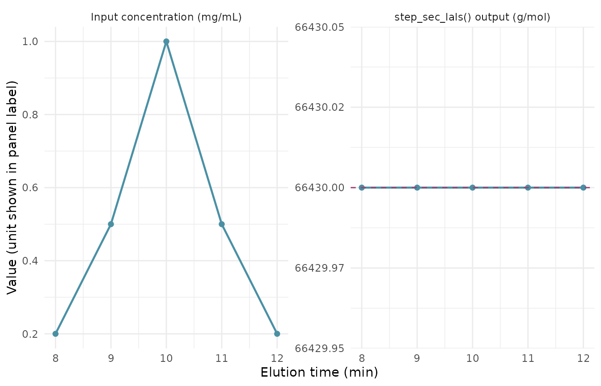

Single-Angle Light Scattering: LALS and RALS
Source:vignettes/lals-rals-detection.Rmd
lals-rals-detection.RmdOverview
step_sec_lals() and step_sec_rals() combine
a single-angle scattering signal with concentration to calculate a
molecular-weight estimate. An instrument calibration constant is
required for an absolute value. Neither step estimates radius of
gyration (Rg). This guide describes the angle assumptions and the inputs
these steps use.
Setup
library(measure)
#> Loading required package: recipes
#> Loading required package: dplyr
#>
#> Attaching package: 'dplyr'
#> The following objects are masked from 'package:stats':
#>
#> filter, lag
#> The following objects are masked from 'package:base':
#>
#> intersect, setdiff, setequal, union
#>
#> Attaching package: 'recipes'
#> The following object is masked from 'package:stats':
#>
#> step
library(measure.sec)
library(recipes)
library(dplyr)
library(ggplot2)The angular dependence problem
Scattering response depends on detection angle through the particle
form factor, P(theta). At low angles, this factor is closer
to one for a given particle. At wider angles, molecular size can affect
the response. The current LALS and RALS steps use one supplied angle
each; they do not fit an angular model or estimate Rg.
LALS: low-angle light scattering
Principle
LALS detectors measure scattering at a low angle. The current step uses the configured angle in a single-angle estimate; it does not fit or correct the particle form factor.
The current step calculates:
Where: - S(θ) = detector signal - C_cal = instrument-specific signal calibration constant - K = optical constant - c_g/mL = concentration converted to g/mL
Without calibration_constant, the implementation uses 1
and labels the result relative rather than an absolute molecular
weight.
When to use LALS
LALS samples a low scattering angle, where the form factor is closer to one for a given particle. The current step applies a single-angle calculation; it does not correct for angular dependence or report Rg. Absolute estimates need an instrument-specific calibration constant.
LALS workflow
# LALS workflow example
# Note: Requires LALS detector data
# Simulate sample data structure
lals_samples <- tibble(
sample_id = "Protein-A",
ri_signal = list(c(0.1, 0.5, 1.0, 0.5, 0.1)),
lals_signal = list(c(0.05, 0.25, 0.5, 0.25, 0.05)),
elution_time = list(c(8, 9, 10, 11, 12)),
dn_dc = 0.185
)
rec_lals <- recipe(
ri_signal + lals_signal + elution_time + dn_dc ~ sample_id,
data = lals_samples
) |>
update_role(sample_id, new_role = "id") |>
# Convert signals to measure format
step_measure_input_long(ri_signal, location = vars(elution_time), col_name = "ri") |>
step_measure_input_long(lals_signal, location = vars(elution_time), col_name = "lals") |>
# Baseline correction
step_sec_baseline(measures = c("ri", "lals")) |>
# Process RI for concentration
step_sec_ri(measures = "ri", dn_dc_column = "dn_dc") |>
step_sec_concentration(
measures = "ri",
detector = "ri",
injection_volume = 100,
sample_concentration = 2.0,
concentration_units = "mg/mL"
) |>
# Process LALS for MW
step_sec_lals(
measures = "lals",
concentration_col = "ri",
angle = 7, # Detection angle
laser_wavelength = 670, # nm
dn_dc = 0.185, # mL/g
solvent_ri = 1.333, # Water
calibration_constant = 1.5e-5 # From instrument calibration
)
prepped_lals <- prep(rec_lals)
result_lals <- bake(prepped_lals, new_data = NULL)A controlled LALS software example
The example constructs a scattering signal algebraically from a
chosen 66,430 g/mol target, a concentration profile, and a calibration
constant of 1.0. Concentration is supplied to
step_sec_lals() in mg/mL; the signal construction converts
it to g/mL to match the optical constant equation. The plot shows the
input concentration and the API output on separate y-scales. This checks
the calculation and unit handling only: the constructed signal and
constant are not instrument measurements or an instrument
calibration.
software_input <- tibble::tibble(
elution_time = 8:12,
concentration_mg_ml = c(0.2, 0.5, 1.0, 0.5, 0.2)
)
target_mw_g_mol <- 66430
concentration_g_ml <- software_input$concentration_mg_ml / 1000
dn_dc <- 0.185
solvent_ri <- 1.333
wavelength_nm <- 670
calibration_constant <- 1.0 # Chosen for this software illustration only
# Match the step's K calculation: wavelength in cm and dn/dc in cm^3/g.
lambda_cm <- wavelength_nm * 1e-7
K <- 4 * pi^2 * solvent_ri^2 * dn_dc^2 /
(6.022e23 * lambda_cm^4)
lals_signal <- K * concentration_g_ml * target_mw_g_mol /
calibration_constant
as_measure <- function(value) {
measure::new_measure_list(list(
measure::new_measure_tbl(software_input$elution_time, value)
))
}
concentration_measure <- as_measure(software_input$concentration_mg_ml)
attr(concentration_measure, "sec_concentration_unit") <- "mg/mL"
software_data <- tibble::tibble(
sample_id = "controlled software example",
concentration = concentration_measure,
lals = as_measure(lals_signal)
)
software_recipe <- recipes::recipe(~., data = software_data) |>
step_sec_lals(
measures = "lals",
concentration_col = "concentration",
concentration_unit = "mg/mL",
angle = 7,
laser_wavelength = wavelength_nm,
dn_dc = dn_dc,
solvent_ri = solvent_ri,
calibration_constant = calibration_constant
)
software_result <- recipes::prep(software_recipe, training = software_data) |>
recipes::bake(new_data = NULL)
estimated_mw <- software_result$mw_lals[[1]]$value
stopifnot(isTRUE(all.equal(
estimated_mw,
rep(target_mw_g_mol, length(software_input$elution_time)),
tolerance = 1e-10
)))
software_plot_data <- dplyr::bind_rows(
tibble::tibble(
elution_time = software_input$elution_time,
panel = "Input concentration (mg/mL)",
value = software_input$concentration_mg_ml
),
tibble::tibble(
elution_time = software_input$elution_time,
panel = "step_sec_lals() output (g/mol)",
value = estimated_mw
)
)
ggplot2::ggplot(
software_plot_data,
ggplot2::aes(elution_time, value)
) +
ggplot2::geom_line(linewidth = 0.8, colour = "#4A90A4") +
ggplot2::geom_point(size = 1.7, colour = "#4A90A4") +
ggplot2::geom_hline(
data = tibble::tibble(
panel = "step_sec_lals() output (g/mol)",
target = target_mw_g_mol
),
ggplot2::aes(yintercept = target),
linetype = "dashed",
colour = "#A23B72",
inherit.aes = FALSE
) +
ggplot2::facet_wrap(~panel, scales = "free_y", ncol = 2) +
ggplot2::labs(
x = "Elution time (min)",
y = "Value (unit shown in panel label)"
) +
ggplot2::theme_minimal(base_size = 11)
Controlled software example for step_sec_lals(). The input
concentration is given in mg/mL and converted to g/mL when constructing
a synthetic signal that returns the preset 66,430 g/mol target at each
point. Panel y-scales are separate. These algebraically constructed
inputs illustrate the API calculation and unit handling; they are not
instrument measurements or evidence of LALS accuracy.
RALS: right-angle light scattering
Principle
RALS detectors measure scattering at 90 degrees by default. The angular response can depend on particle size; the current step does not correct it or estimate Rg.
When to use RALS
RALS records at 90 degrees by default. Its angular term can differ from the low-angle assumption, so the estimate depends on particle size and instrument calibration. The current step returns a single-angle estimate and does not calculate Rg.
RALS workflow
# RALS workflow example
# Note: Requires RALS detector data
# Simulate sample data structure
rals_samples <- tibble(
sample_id = "Polymer-X",
ri_signal = list(c(0.1, 0.5, 1.0, 0.5, 0.1)),
rals_signal = list(c(0.04, 0.20, 0.40, 0.20, 0.04)),
elution_time = list(c(8, 9, 10, 11, 12)),
dn_dc = 0.185
)
rec_rals <- recipe(
ri_signal + rals_signal + elution_time + dn_dc ~ sample_id,
data = rals_samples
) |>
update_role(sample_id, new_role = "id") |>
# Convert signals to measure format
step_measure_input_long(ri_signal, location = vars(elution_time), col_name = "ri") |>
step_measure_input_long(rals_signal, location = vars(elution_time), col_name = "rals") |>
# Baseline correction
step_sec_baseline(measures = c("ri", "rals")) |>
# Process RI for concentration
step_sec_ri(measures = "ri", dn_dc_column = "dn_dc") |>
step_sec_concentration(
measures = "ri",
detector = "ri",
injection_volume = 100,
sample_concentration = 2.0,
concentration_units = "mg/mL"
) |>
# Process RALS for MW
step_sec_rals(
measures = "rals",
concentration_col = "ri",
angle = 90, # Right angle
laser_wavelength = 670, # nm
dn_dc = 0.185, # mL/g
solvent_ri = 1.333, # Water
calibration_constant = 1.2e-5 # From instrument calibration
)
prepped_rals <- prep(rec_rals)
result_rals <- bake(prepped_rals, new_data = NULL)Choosing a step
| Step | Angle | Current calculation | Absolute values |
|---|---|---|---|
step_sec_lals() |
Low angle; defaults to 7 degrees | Single-angle estimate | Requires an instrument calibration constant |
step_sec_rals() |
90 degrees by default | Single-angle estimate | Requires an instrument calibration constant |
step_sec_mals() |
One supplied angle | Single-angle approximation | Requires an instrument calibration constant; no multi-angle fit or Rg output |
Choose the step that matches the detector channel and calibration available. The package examples do not establish a size range or comparative accuracy for the instruments.
Combining LALS/RALS with MALS
Some systems record at several scattering angles. Multiple channels
can provide cross-checks, but step_sec_mals() currently
uses one angle and does not fit a multi-angle model. The LALS and RALS
steps each calculate from their own single-angle channel.
# Combined LALS + RALS + MALS workflow
rec_combined <- recipe(
ri_signal + lals_signal + rals_signal + mals_signal + elution_time + dn_dc ~ sample_id,
data = multi_detector_samples
) |>
update_role(sample_id, new_role = "id") |>
# Input all detectors
step_measure_input_long(ri_signal, location = vars(elution_time), col_name = "ri") |>
step_measure_input_long(lals_signal, location = vars(elution_time), col_name = "lals") |>
step_measure_input_long(rals_signal, location = vars(elution_time), col_name = "rals") |>
step_measure_input_long(mals_signal, location = vars(elution_time), col_name = "mals") |>
# Baseline and concentration
step_sec_baseline(measures = c("ri", "lals", "rals", "mals")) |>
step_sec_ri(measures = "ri", dn_dc_column = "dn_dc") |>
step_sec_concentration(
measures = "ri",
detector = "ri",
injection_volume = 100,
sample_concentration = 2.0,
concentration_units = "mg/mL"
) |>
# Process each LS detector
step_sec_lals(measures = "lals", concentration_col = "ri", dn_dc = 0.185) |>
step_sec_rals(measures = "rals", concentration_col = "ri", dn_dc = 0.185) |>
step_sec_mals(mals_col = "mals", dn_dc_column = "dn_dc")Calibration constants
Both step_sec_lals() and step_sec_rals()
need a calibration_constant for absolute estimates. Without
it, results are relative and carry no molecular weight unit.
Determining calibration constants
- Use a well-characterized standard (e.g., BSA, narrow PS standard)
- Run the standard under your experimental conditions
- Calculate the constant that yields the known MW
# Example: Calibrating with BSA (MW = 66,430 g/mol)
# 1. Measure BSA with known concentration
# 2. Convert c to g/mL, then use the same equation as step_sec_lals/rals:
# MW = raw_signal * cal_constant / (K * c)
bsa_mw <- 66430 # g/mol (numerically equal to Da)
bsa_conc_mg_ml <- 1.0
bsa_conc_g_ml <- bsa_conc_mg_ml / 1000
dn_dc_bsa <- 0.185
solvent_ri <- 1.333
wavelength <- 670
# Calculate K as in the current step implementation. Wavelength is converted
# from nm to cm, and dn/dc is in mL/g (= cm^3/g).
lambda_cm <- wavelength * 1e-7
K <- 4 * pi^2 * solvent_ri^2 * dn_dc_bsa^2 /
(6.022e23 * lambda_cm^4)
# For a measured raw_signal of 0.5, solve the API equation for the constant.
raw_signal <- 0.5
calibration_constant <- bsa_mw * K * bsa_conc_g_ml / raw_signalTroubleshooting
See also
- MALS Detection - Current single-angle implementation and multi-angle limits
- Triple Detection - Combined RI + Viscometer + LS workflows
- Getting Started - Basic SEC workflow and concepts
- Calibration Management - Save and reuse calibrations
Session info
sessionInfo()
#> R version 4.6.2 (2026-10-29)
#> Platform: x86_64-pc-linux-gnu
#> Running under: Ubuntu 26.04.1 LTS
#>
#> Matrix products: default
#> BLAS: /usr/lib/x86_64-linux-gnu/openblas-pthread/libblas.so.3
#> LAPACK: /usr/lib/x86_64-linux-gnu/openblas-pthread/libopenblasp-r0.3.32.so; LAPACK version 3.12.0
#>
#> locale:
#> [1] LC_CTYPE=C.UTF-8 LC_NUMERIC=C LC_TIME=C.UTF-8
#> [4] LC_COLLATE=C.UTF-8 LC_MONETARY=C.UTF-8 LC_MESSAGES=C.UTF-8
#> [7] LC_PAPER=C.UTF-8 LC_NAME=C LC_ADDRESS=C
#> [10] LC_TELEPHONE=C LC_MEASUREMENT=C.UTF-8 LC_IDENTIFICATION=C
#>
#> time zone: UTC
#> tzcode source: system (glibc)
#>
#> attached base packages:
#> [1] stats graphics grDevices utils datasets methods base
#>
#> other attached packages:
#> [1] ggplot2_4.0.4 measure.sec_0.0.0.9000 measure_0.0.1.9003
#> [4] recipes_1.4.0 dplyr_1.2.1
#>
#> loaded via a namespace (and not attached):
#> [1] gtable_0.3.6 xfun_0.62 bslib_0.12.0
#> [4] lattice_0.23-1 vctrs_0.7.3 tools_4.6.2
#> [7] generics_0.1.4 parallel_4.6.2 tibble_3.3.1
#> [10] pkgconfig_2.0.3 Matrix_1.7-6 data.table_1.18.6.1
#> [13] RColorBrewer_1.1-3 S7_0.2.2 desc_1.4.3
#> [16] lifecycle_1.0.5 compiler_4.6.2 farver_2.1.2
#> [19] textshaping_1.0.5 codetools_0.2-20 htmltools_0.5.9
#> [22] class_7.3-24 sass_0.4.10 yaml_2.3.12
#> [25] prodlim_2026.03.11 tidyr_1.3.2 pillar_1.11.1
#> [28] pkgdown_2.2.1 jquerylib_0.1.4 MASS_7.3-66
#> [31] cachem_1.1.0 gower_1.0.2 rpart_4.1.27
#> [34] parallelly_1.50.0 lava_1.11 tidyselect_1.2.1
#> [37] digest_0.6.39 future_1.82.0 purrr_1.2.2
#> [40] listenv_1.1.0 labeling_0.4.3 splines_4.6.2
#> [43] fastmap_1.2.0 grid_4.6.2 cli_3.6.6
#> [46] magrittr_2.0.5 survival_3.8-12 future.apply_1.21.0
#> [49] withr_3.0.3 scales_1.4.0 lubridate_1.9.5
#> [52] timechange_0.4.0 rmarkdown_2.32 globals_0.20.0
#> [55] otel_0.3.0 nnet_7.3-21 timeDate_4052.112
#> [58] ragg_1.5.2 evaluate_1.0.5 knitr_1.52
#> [61] hardhat_1.4.3 rlang_1.3.0 Rcpp_1.1.2
#> [64] glue_1.8.1 ipred_0.9-16 jsonlite_2.0.0
#> [67] R6_2.6.1 systemfonts_1.3.3 fs_2.1.0